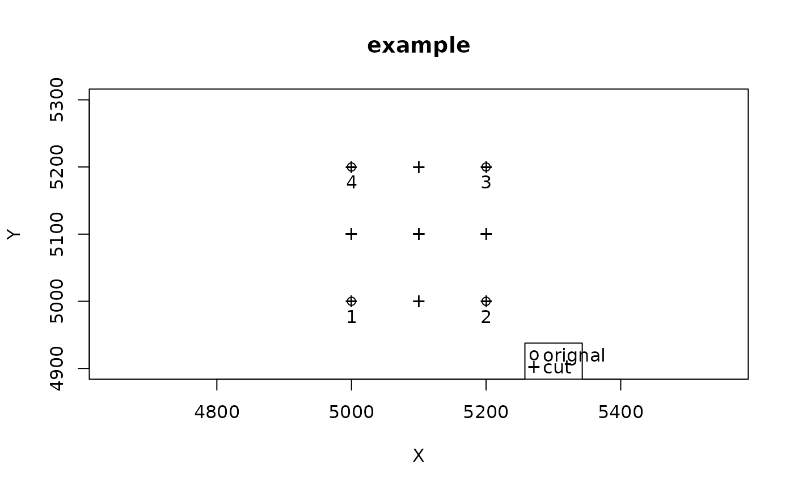

This function divides a plot (or several plots) in subplots and returns the coordinates of the grid. These coordinates are calculated by a bilinear interpolation with the projected corner coordinates as references.
Arguments
- projCoord
A data frame containing the projected coordinates of plot corners, with X and Y on the first and second column respectively
- plot
A vector indicating the plot codes
- cornerNum
A vector with corners numbered from 1 to 4 for each plot, numbering must be in clockwise direction
- gridsize
The size of the subplots
- dimX
A vector indicating the size of the plot on the X axis, in meters and in the relative coordinates system (if a single value is supplied, it will be replicated for all plots)
- dimY
A vector indicating the size of the plot on the Y axis, in meters and in the relative coordinates system (if a single value is supplied, it will be replicated for all plots)
Value
Returns a data-frame containing as many rows as there are corners corresponding to the subplots, and the following columns :
plot: The plot codesubplot: The automatically generated subplot codeXRel: The relative coordinates on the X axis (defined by corners 1->4)YRel: The relative coordinates on the Y axis (defined by corners 1->2)XAbs: The absolute (projected) X coordinatesYAbs: The absolute (projected) Y coordinates
Examples
coord <- data.frame(X = c(0, 200, 0, 200), Y = c(0, 0, 200, 200)) + 5000
cornerNum <- c(1, 2, 4, 3)
plot <- rep("plot1", 4)
cut <- cutPlot(coord, plot, cornerNum, gridsize = 100, dimX = 200, dimY = 200)
#> Warning: 'cutPlot()' has been replaced by `divide_plot()` and will be removed in the next version.
#> Please see the vignette `Spatialized trees and forest stand metrics with BIOMASS`
# plot the result
plot(coord, main = "example", xlim = c(4900, 5300), ylim = c(4900, 5300), asp = 1)
text(coord, labels = cornerNum, pos = 1)
points(cut$XAbs, cut$YAbs, pch = "+")
legend("bottomright", legend = c("orignal", "cut"), pch = c("o", "+"))
